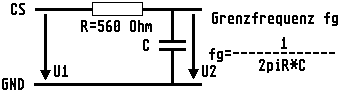
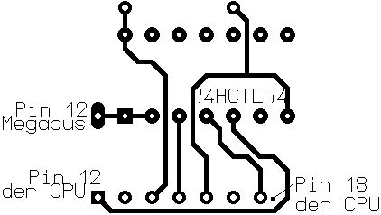

Previous
Next
TOC
260/520ST - Bild läuft durch und Floppy Laufwerke werden nicht an-
gesprochen. Treiberbaustein defekt und austauschen. Bei 260/520ST
ist es U35. Kann unter Umständen auch ein defekter GLUE Chip sein,
falls an der Monitorbuchse herumgebastelt worden ist.
Eine Farbe fehlt an der Monitorbuchse, ist aber am HF Modulator noch
da. Treibertransistoren Q3 bis Q5 durchmessen. Wahrscheinlich ist
einer defekt. Tip: Kurzzeitig mal +5V auf die Basis des Transistors
geben, der nicht will.
Weiße Punkte, schwarze Punkte, Streifen auf Bildschirm, nach an-
klicken eines Menüpunktes wird der Bildschirm nicht neu aufgebaut.
Kann RAM-Fehler direkt oder RAM-Thermo-Fehler sein oder Bustreiber
(74LS244 und 74LS373) haben thermischen Fehler oder Kontaktschwie-
rigkeiten an den Ram-Chip's. In harten Fällen Entstörkondensatoren
der RAMs auf Kapazität und Kurzschluß/Unterbrechung durchmessen.
DMA-Bootproblem (verschluckte Zeichen)
Beim ID-Check wird der Name der angeschlossenen Harddisk ausgegeben
und wird dabei das ERSTE Datenbyte verschluckt - "UNATUM LPS105"
statt "QUANTUM LPS105" -, könnte das am berüchtigten CS-Spike liegen.
Versucht mal, die CS-Leitung (Pin 9 am ACSI-Stecker) mit einem
Tiefpaß 560 Ohm / 22 pF zu filtern.

In einigen MegaST Computern gibt es eine Huckepackplatine mit einem
74HCTL74 auf der CPU. Diese Platine wird benötigt, weil einige Chip-
serien des Blitters fehlerhaft sind, wird diese entfernt wegen dem
Einbau einer
Beschleunigerkarte muß auf der Rückseite der Platine
eine Verbindung von Pin 12 der CPU zu Pin 12 der Stiftleiste (die
zur CPU zeigt) am
MegaBus gezogen werden!

weiterblättern
Kapitel Die Reparaturtips für 260/520/1040/MegaST, Seite 4